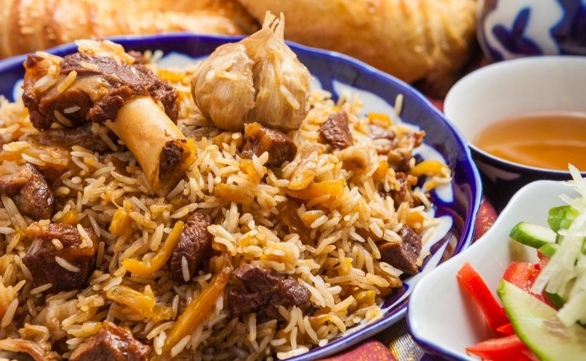

Plov

What is Plov ?
Plov to Uzbekistan is like pasta to Italians.
Considered Uzbekistan’s national dish, it’s a source of delicious pride throughout the country and everyone has their own spin on it.
Because it’s so simple to prepare, plov is often served at large gatherings, such as weddings, holiday parties, and birthdays.
Ingredients
- Beef
- Carrots
- Onions
- Basmati Rice
- Oil
- Garlic
Instruction
- Prep the Meat and Veggies: Cut the meat into cubes, slice carrots, and dice onions.
- Brown the Meat: In a preheated Dutch oven, use tongs to brown the sides of the meat.
- Cook the Veggies: Add onions and carrots to the Dutch oven, sautéing until the onions turn translucent.
- Add Rice and Seasoning: Add long grain rice and bay leaves to the Dutch oven,
stirring until ingredients are evenly distributed, and toasting the rice slightly.
Slice off the top of a head of garlic and place the entire head inside the Dutch oven.
Add water and season generously with salt and pepper.
- Cook and Cover: Allow the plov to come to a simmer.
Turn the heat down low, pop the lid on, and cook for an additional 40-50 minutes.
- Serve: Serve warm alongside pickled veggies or salad.